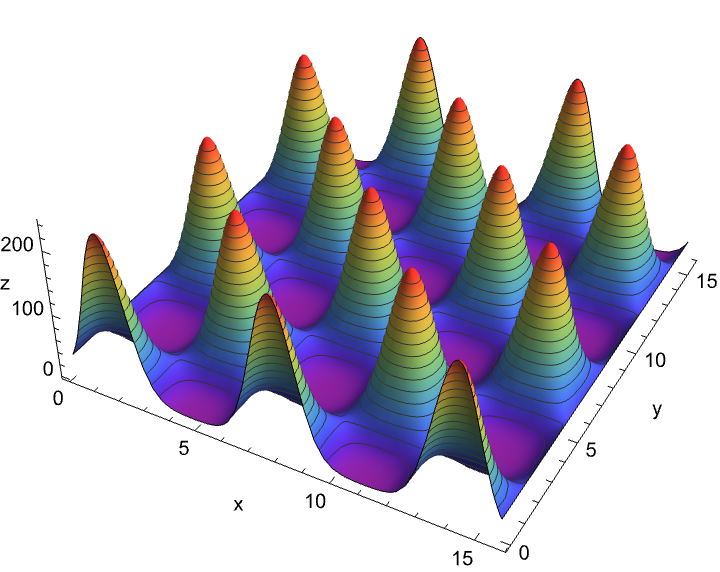

Eggbox: a minimal black box example
This tutorial is for a HEP researcher who wants to write a Jarvis-HEP YAML file from scratch.
We use the simple EggBox calculator as a stand-in for a real physics package. The goal is not the EggBox function itself. The goal is to learn the authoring pattern you will reuse for your own model.
What You Will Learn
By the end of this page, you will know how to write a YAML card that defines parameters, runs a calculator, extracts observables, and evaluates a likelihood.
The same pattern applies to real HEP tools such as spectrum generators, dark matter codes, and collider recasting pipelines.
The Black-Box Model
Jarvis-HEP treats your physics code as a black box.
For each sampled point, Jarvis-HEP does the following:
- writes one input file
- runs your code
- reads one output file
- stores the requested observables
- evaluates the
LogLikelihood
For the EggBox example, the external program reads input.json and writes output.json.
The function is:
z(x, y) = (sin(x) * cos(y) + 2)^5
We pretend that an experiment measures:
z = 100 +/- 10
So the scan goal is to find parameter points where the predicted z value is compatible with that target.

Before You Write YAML
Think in this order:
- Which parameters do I scan?
- Which program computes my observables?
- Which output values do I want to save?
- Which likelihood should Jarvis-HEP use?
For this tutorial, the answers are:
- sampled parameters:
x,y - calculator:
EggBox - observable:
z - likelihood:
LogGauss(z, 100, 10)
Step 1: Create The Scan Section
Start with the run name and result directory.
Scan:
name: "EggBox_Bridson"
save_dir: "&J/outputs"
This tells Jarvis-HEP to create:
Eggbox
├── images
│ └── EggBox_Bridson
├── logs
│ └── EggBox_Bridson
└── outputs
└── EggBox_Bridson
├── DATABASE
└── SAMPLE
Reference: Task YAML Structure
Step 2: Add The Sampling Section
For a first tutorial, use Random. It is the simplest sampler to understand.
Sampling:
Method: "Bridson"
Variables:
- name: x
description: "Variable X following a Flat distribution for sampling."
distribution:
type: Log
parameters:
min: 0.1
max: 5.0
length: 110
- name: y
description: "Variable Y following a Logarithmic distribution for sampling."
distribution:
type: Flat
parameters:
min: 0
max: 5.0
length: 110
Radius: 1
MaxAttempt: 30
LogLikelihood:
- {name: "LogL_Z", expression: "LogGauss(z, 100, 10)"}
Methodselects the sampler.Variablesdefines the parameters to scan.Point numberis the exact control key forRandom.LogLikelihooduses the observablez, which the calculator will produce.
Reference: Samplers
Step 3: Add EnvReqs
Now declare the minimum runtime requirements.
EnvReqs:
OS:
- name: linux
version: ">=3.10.0"
- name: Darwin
version: ">=10.0"
Check_default_dependences:
required: True
default_yaml_path: "&J/deps/environment_default.yaml"
EnvReqs declares the minimum runtime environment Jarvis-HEP needs to run the scan reliably. Jarvis uses this section to validate your machine or HPC environment before starting and to locate the correct default dependencies file.
In short: this block is a safety gate. Declare which platforms are acceptable and enforce a baseline environment configuration before executing calculators and samplers.
Reference:
Step 4: Declare The Calculator Workflow
This is the part that most users actually need to learn.
You must tell Jarvis-HEP:
- where the external code lives
- where each sample should run
- how to build the input file
- how to run the program
- how to read the output file
The Calculator Section
Calculators:
make_paraller: 4
path: "&J/Workshop/Program"
Modules:
- name: EggBox
required_modules: []
clone_shadow: true
path: "&J/Workshop/Program/EggBox/@PackID"
source: "&J/External/Inertial/EggBox"
installation:
- "cp -r ${source}/* ${path}"
initialization:
- "cp ${source}/input.json ${path}/input.json"
- "rm -f ${path}/output.json"
execution:
path: "&J/Workshop/Program/EggBox/@PackID"
commands:
- "./eggbox.py"
input:
- name: EggBoxInput
path: "&J/Workshop/Program/EggBox/@PackID/input.json"
type: "Json"
save: false
actions:
- type: "Dump"
variables:
- {name: "xx", expression: "x * Pi"}
- {name: "yy", expression: "y * Pi"}
output:
- name: EggBoxOutput
path: "&J/Workshop/Program/EggBox/@PackID/output.json"
type: "Json"
save: true
variables:
- {name: z}
Understanding Each Configuration Field
make_paraller: Sets the number of parallel worker slots available for running calculator tasks.- Note: the spelling is historical and must be kept as
make_paraller.
- Note: the spelling is historical and must be kept as
path: Specifies the base directory where Jarvis-HEP creates per-sample calculator workspaces.-
Modules: A list of calculator modules to use in your scan.In this tutorial, we use a single module called
EggBox.clone_shadow: true: Whenclone_shadowis enabled, each sample point runs in its own independent shadow directory (similar to "shadow clones," allowing multiple copies of the module to be installed and executed simultaneously). This is the recommended setting for external tools that create or modify files during execution.path: ".../@PackID": This means that before executing the commands in theinstallation,initialization, andexecutionsections below, the system will enter this path directory. The special placeholder@PackIDgets replaced with a unique identifier for each sample's working directory.source: A directory points to the location of your external source code template.installation: A list of shell commands that copy or prepare the calculator program directory.Jarvisautomatically installs one instance when a task is waiting.initialization: Commands that run before execute theexecutioncommand. In our example, we:- copy the template
input.jsonfile; - delete any leftover
output.jsonfrom previous runs.
- copy the template
execution.commands: The actual shell commands used to run your external calculator program.execution.input: Tells Jarvis-HEP how to generate the calculator's input file. For this example:- we use
Jsonfile format - the action type is
Dump - scan parameters
xandyare mapped to JSON fieldsxxandyy - each value is multiplied by
Pibefore writing, matching the EggBox code's expected input convention
- we use
execution.output: Tells Jarvis-HEP how to extract observables from the calculator's output file. Here, the JSON output file contains a field namedz, which we read and store as the observablez.
For more details, see: Calculators, IO files
Step 5: Put Everything Together & Run The Scan
If your project workspace is already prepared, run:
Jarvis input.yaml
to start your own scan, you will reproduce the workflow shown in From 0 to 1: Common workflow .
How To Adapt This To Your Own Physics Case
The key to adapting this tutorial is to think of any external tool as a black box that transforms inputs into outputs. No matter what physics code you use, the workflow always follows the same three-step pattern:
1. Installation
Set up the calculator's executable and dependencies in a working directory. This happens once per calculator instance.
2. Initialization
Prepare the calculator for a specific sample point by generating input files and cleaning up any previous outputs.
3. Execution
Run the calculator and extract the observables you need from its output.
This black-box perspective applies to any HEP tool—spectrum generators, dark matter codes, collider simulators, or custom scripts. You don't need to understand the internal workings of the code. You only need to know:
- What input format it expects (JSON, SLHA, plain text, etc.)
- How to run it (command-line call, script execution)
- What output format it produces and which values to read
Now let's see how to adapt each component of the EggBox example to your own physics case. The following sections walk you through replacing each part step by step:
-
Replace The Parameters: In the
Sampling.Variablessection, replacexandywith your own model parameters. For example, if you're scanning a supersymmetric model, you might use parameters likem0,m12,tanBeta, etc. Adjust the distribution type (Flat,Log,Gauss) and parameter ranges to match your physics constraints. -
Replace The Calculator: In the
Calculators.Modulessection, replaceEggBoxwith your own external tool. Change thesourcepath to point to your tool's location, and update theinstallationandinitializationcommands to match how your tool is set up and prepared for execution. -
Replace The Input Mapping: In
execution.input, specify how your scan parameters map to your calculator's input file format. If your tool expects SLHA format instead of JSON, changetype: "Json"totype: "SLHA"and adjust theactionsaccordingly. Update thevariableslist to match the parameter names and expressions your tool expects. -
Replace The Output Mapping: In
execution.output, tell Jarvis-HEP which observables to extract from your calculator's output file. Replace the variablezwith the physical quantities your tool produces (e.g., masses, cross-sections, branching ratios). Make sure thetypematches your output file format (JSON, SLHA, plain text, etc.). -
Replace The Likelihood: In the
Sampling.LogLikelihoodsection, replaceLogGauss(z, 100, 10)with a likelihood expression that reflects your experimental constraints. You can combine multiple observables using built-in functions and/or custom expressions. Make sure every observable referenced in your likelihood is actually produced by your calculator's output mapping. After completing these steps, Jarvis can automatically parse the calculation flow in your own task.
Remember: in a Unix system, everything is a file, and all packages are black boxes. The difference lies in their I/O and commands.